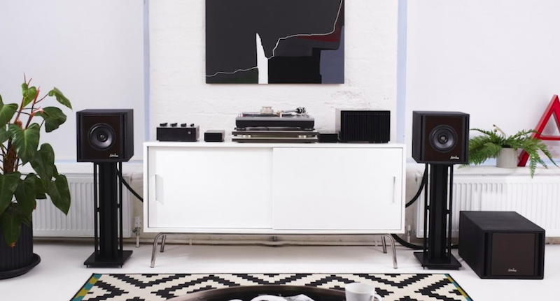

UK boutique audio company MasterSounds have announced a new speaker system called CLARITY. Made up on two satellite speakers called Cube 6.
Marcelo RuffinoNov 10th, 2019
La compañía británica de audio boutique MasterSounds ha anunciado un nuevo sistema de altavoces llamado CLARITY. Compuesto por dos altavoces satelitales llamados Cube 6, un subwoofer llamado SUB 8 y un amplificador PM160, el fundador de MasterSounds, Ryan Shaw, dijo que "el espíritu de diseño detrás de CLARITY es simplicidad, versatilidad y flexibilidad, ofreciendo un escenario de sonido bellamente abierto y natural en un compacto y paquete visualmente atractivo ".
La compañía británica de audio boutique MasterSounds ha anunciado un nuevo sistema de altavoces llamado CLARITY. Compuesto por dos altavoces satelitales llamados Cube 6, un subwoofer llamado SUB 8 y un amplificador PM160, el fundador de MasterSounds, Ryan Shaw, dijo que "el espíritu de diseño detrás de CLARITY es simplicidad, versatilidad y flexibilidad, ofreciendo un escenario de sonido bellamente abierto y natural en un compacto y paquete visualmente atractivo ".
Con un costo de £ 4,495, CLARITY se fabrica en el Reino Unido por TPI en su planta de Leicester, con el Cube 6 con un controlador de seis pulgadas, el SUB8 con un controlador de ocho pulgadas y el PW160 con una potencia de hasta 320Wrms. El sistema CLARITY está hecho a mano con un tiempo de pedido de tres semanas y se puede comprar aquí.